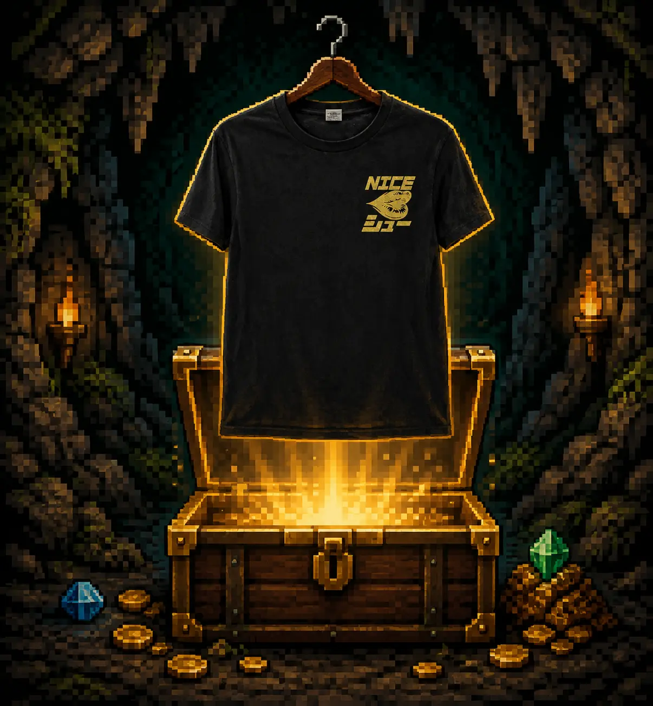
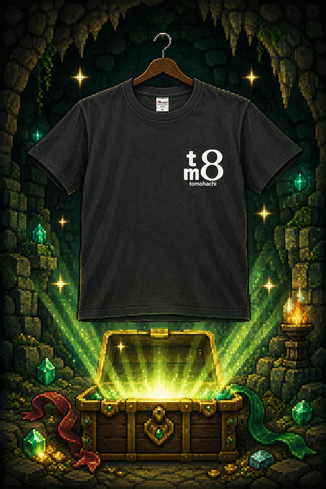

FRONT / 左胸プリント
 BACK / 背中プリント
BACK / 背中プリント
GEAR STATUS
制作仕様
- プリント方法
- シルクスクリーンプリント
- プリント位置
- 左胸／背中
- プリントカラー
- 特色ゴールド
- ウェア
- 黒・綿Tシャツ
- 制作枚数
- 50枚
REPEAT ORDER BONUS版追加プリントは版代なし
一度作った版を使えるため、同じデザインで追加プリントするときは版代がかかりません。お店のスタッフTシャツやチームロゴなど、継続して使うデザインに最適です。
MASTER'S NOTE今回の攻略ポイント
01黒に映える特色ゴールド
黒いボディにゴールドを合わせ、左胸と背中のデザインをはっきり見せる配色にしました。
02前後で役割を分ける
左胸はワンポイント、背中は横幅を活かした大きなデザインとして、前後の見え方に変化をつけています。
0350枚を同じ仕上がりに
まとまった枚数に向くシルクスクリーンを採用し、同じ位置・同じ色で揃えて制作しました。

FRONT / 左胸プリント
 BACK / 記念デザイン
BACK / 記念デザイン
GEAR STATUS
制作仕様
- 用途
- 5周年の記念プレゼント
- プリント方法
- DTF転写プリント
- プリント位置
- 左胸／背中
- プリントカラー
- 単色ホワイト（フルカラー対応）
- ウェア
- 黒・綿Tシャツ
- 制作枚数
- 2枚
SMALL LOT BONUS転製版代なしで小枚数に最適
DTF転写プリントは版を作らないため、製版代がかかりません。記念プレゼントや個人用など、1枚・2枚から作りたいケースに向いています。
MASTER'S NOTE今回の攻略ポイント
012枚だけの記念プレゼント
必要な枚数だけ制作できるDTFを使い、5周年を祝う特別なプレゼントとして仕上げました。
02細かなデザインも再現
人物の表情、リボン、細かな装飾を含む背面デザインも、DTFなら一つの転写データとしてプリントできます。
03フルカラーにも対応
今回は白1色ですが、写真やグラデーションなどの細かなフルカラーデザインも同じ方法でプリント可能です。
 FRONT / A4横向きフルカラー
FRONT / A4横向きフルカラー
※このデザインと画像は、フルカラーDTFの表現例として制作した架空のイメージサンプルです。
GEAR STATUS
制作仕様
- 用途
- 飲食店スタッフTシャツ
- プリント方法
- DTF転写プリント
- プリント位置
- 胸中央
- プリントサイズ
- A4横向き程度
- プリントカラー
- フルカラー
- ウェア
- ホワイト・綿Tシャツ
- 制作枚数
- 20枚
FULL COLOR BONUS彩色数の制限なし
DTF転写プリントは色数で版を分ける必要がないため、細かな柄やグラデーションを含む自由なフルカラーデザインが可能です。
MASTER'S NOTE今回の攻略ポイント
01店舗の個性を多色で表現
ポップな配色や細かな網点を使い、スタッフウェアにもお店らしい世界観を持たせられます。
0220枚を同じデザインで
スタッフ全員分を同じ色・同じ位置で揃え、店内の統一感を作る用途にも向いています。
03必要な数量へ柔軟に対応
少人数のお店で使う小枚数から、複数店舗やイベント用の大ロットまで対応できます。
GEAR STATUS
決定した仕様
- 当初の希望
- 20枚・3か所・袖を一周する柄
- 最初の問題
- 縫い目をまたぐDTF圧着は仕上がりが安定しない
- 提案
- 袖の見える面へ約12cm、縫い目から1〜2cm離す
- プリント方法
- 3か所DTF転写プリント
- 初回枚数
- 10枚
- 見積もり
- 29,600円（税込・送料込み）
WHY THIS PLAN案「できない」で終わらせず位置を変更
袖を一周する配置は縫い目と段差があるため、通常のDTF転写では圧力が均一になりません。柄の意味と見え方を残しながら、平らに圧着できる範囲へ調整しました。
MASTER'S NOTE相談から決定まで
01希望を分解する
枚数、3か所の位置、AI画像の元データ、袖で見せたい範囲を順に確認しました。
02加工リスクを先に説明
縫い目や襟の近くは圧着不良や位置ずれが起きやすいため、制作前に避ける距離を共有しました。
03まず10枚で実施
最初から20枚を確定せず、用途と予算を再確認して初回10枚の仕様へ整理しました。
YOUR IDEA / NEXT QUEST難しい位置やAI画像も相談できます
元画像、希望枚数、プリントしたい場所が分かれば、加工可否と代替案を確認します。
このような相談をする ▶
ハダオジプリント事業サイトでは、チーム・サークル・企業・設備会社の実制作を公開しています。用途の違う事例をまとめて確認できます。
01常総学院ラグビー部 様
チームウェア
02Acorn 様
サークルTシャツ
03株式会社REI FARM 様
ショップウェア
04大秋設備 様
作業着ユニフォーム
写真付きの制作実績を見る
実際のウェアとプリントの仕上がりは、ハダオジプリント事業サイトで公開しています。
事業サイトの実績へ ▶